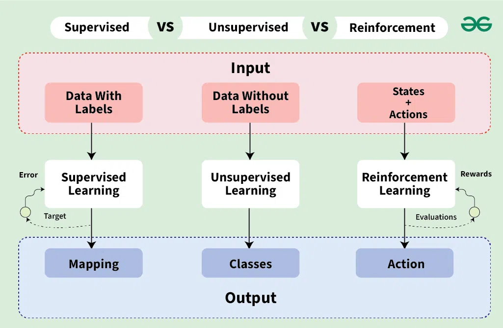

In our first concept, we learned that ML is about finding rules in data. But how does the computer learn? We categorize it into three main "pillars":

The "Teacher" Method: We give the computer a dataset where the answers are already labeled (e.g., "This is a photo of a cat"). The AI learns to associate patterns with those labels.
The "Explorer" Method: We give the computer data with NO labels. The AI must find hidden structures or clusters on its own (e.g., grouping customers by shopping habits).p>
The "Trial & Error" Method: The AI learns by interacting with an environment. It gets "points" for good moves and "penalties" for mistakes (e.g., teaching an AI to play chess).
Machine Learning models aren't magic; they are just math that runs very fast.
To understand how a computer "learns" from those 1,000 photos of apples, you need to understand the basics of Statistics. In our next lesson, we’ll cover:
Ready to learn the math behind these pillars?
Next: Statistics Foundations →